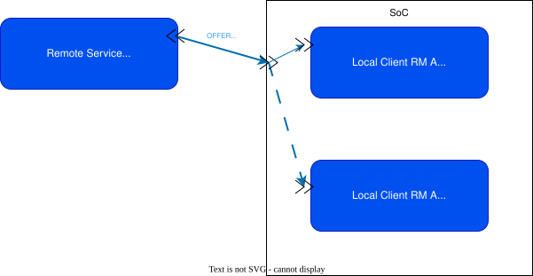
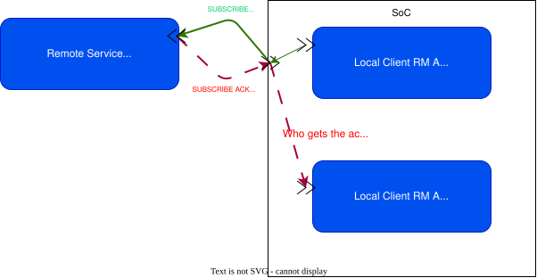
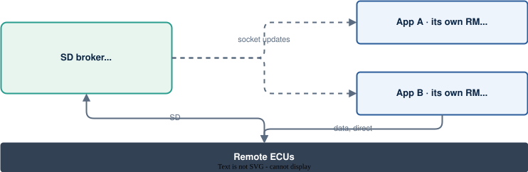

COVESA AMA
Copies, discovery, ownership and threads: proposals for upstream
Siddharth Menon · Principal Engineer, General Motors
shared_ptr owns, views borrowWhere SOME/IP sits in GM's ADAS compute
Use case
ADAS Use Case
ADAS Use Case
| Requirement | What it means for vsomeip |
|---|---|
| No needless copies | Kernel copies on Ethernet are unavoidable. The stack copying already-serialized bytes for its own bookkeeping is not acceptable. |
| E2E always on | Almost all our usecases involve E2E protection and SecOC protection. |
| Crash isolation | One process crashing must not take down unrelated SOME/IP flows. |
| Bounded memory | Under back-pressure, receive buffers come from a fixed pool instead of growing without limit. |
| Standard wire protocol | MCUs keep speaking stock SOME/IP and SOME/IP-SD. Nothing changes on the wire. |
Counting every payload copy in vsomeip 3.6.1, with E2E enabled
Data path
file:line references are in the speaker notesData path · send
Data path · receive
Data path · cost
| Receive path | Copies (N) | Share of one core | Added latency per lidar frame | Memory traffic |
|---|---|---|---|---|
| Proxy app behind the RM | 11 | ~15% | ~14 ms | ~1.5 GB/s |
| App is its own RM | 5 | ~7% | ~6 ms | ~0.7 GB/s |
| Fork | 0–1 | ≤1.4% | ≤1.3 ms | ≤0.14 GB/s |
At 10 Hz the frame budget is 100 ms, so 11 copies spend about a seventh of it moving bytes before anyone uses them. Each copy also evicts cache the consumer needed. Kernel copies aren't included.
The latency figures assume the copying thread is never time-sliced. On a loaded core it shares the CPU with other work, so the real added latency can be 2–3× higher: ~14 ms becomes 28–42 ms.
Data path
// routing/src/routing_manager_base.cpp
its_command.set_message(
std::vector<byte_t>(_data, _data + _size));
// message/src/deserializer.cpp
void deserializer::set_data(
const std::vector<byte_t>& _data) {
data_ = std::move(_data); // const& → copy
}
// routing/src/routing_manager_stub.cpp
auto its_message_data(its_command.get_message()); // by value
// protocol/src/send_command.cpp, deserialize()
std::memcpy(&message_[0], &_buffer[its_offset], message_.size());
vector built just to pass bytes alongstd::move on a const& quietly copiesconst byte_t* pointers: no stage can keep the buffer
alive, so each one copies to be safe. Fixing that is a design change.
Data path
| Path (vsomeip 3.6.1, E2E on) | Userspace | Coding | Design | Kernel |
|---|---|---|---|---|
| Send: proxy app → RM → wire | 13 | 3 | 10 | 3 |
| Receive: wire → RM → proxy app | 11 | 4 | 7 | 3 |
| Send: app is its own RM (GM layout) | 5 | 0 | 5 | 1 |
| Receive: app is its own RM (GM layout) | 5 | 1 | 4 | 1 |
Who owns the sockets, and why discovery has to live somewhere else
Data Ownership
SO_RCVBUF, DSCP, receive thread affinity and back-pressure depend on the payload. The RM can't tune them per consumer.Data Ownership
Data Ownership


✓ Multicast OFFER and FIND are copied to every bound socket, so they work.
✗ Unicast datagrams go to one socket only:
SubscribeEventgroup and its ACKThese usually land on an RM that doesn't own the service.
SO_REUSEADDR works in POSIX sockets.
Data Ownership
| If this crashes… | Single RM | Split design |
|---|---|---|
| Single routing manager / SD authority | All SOME/IP on the ECU stops | Existing flows continue; only new discovery is paused |
| Large-data Client Application | Flow stops; but UDP socket in RM is open | Flows stop; socket is closed |
Data Ownership · GM design

Data Ownership · GM design
The broker runs SOME/IP-SD. As offers and subscriptions arrive, the active plugin sends socket updates to the passive plugins.
Each RM transfers Events and Method data to Subspace (recall it is 0 copy) from its own ports.
RMs keep their sockets and existing flows. The supervisor restarts the broker, and updates resume.
Data Ownership · upstream ask #1
The SD app could have been a RM with protocol=external service, but we didn't do that.
vsomeip3-sd and some custom asio codevsomeip3.so from vsomeip3-sd.so| Library | Contents |
|---|---|
| libvsomeip3-core | message, endpoints, config, logger, plugin manager, runtime factories |
| libvsomeip3-sd | SD state machine, unchanged |
| libvsomeip3 | routing managers, application_impl, UDS IPC, netlink |
application_factory indirection means no public header changesexamples/sd_only_host opens exactly one UDP socket (checked with strace)Removing the copies the E2E API forces
E2E · today
Today application code has to allocate a bufffer and leave a hole for the E2E header:
// routing_manager_impl.cpp (3.6.1), send path
its_buffer.assign(its_data + its_base, // copy the body
its_data + its_size);
e2e_provider_->protect(key, its_buffer, inst); // CRC in place
its_buffer.insert(its_buffer.begin(), // shift everything
its_data, its_data + its_base);
// receive path
e2e_buffer its_buffer(_data + its_base, // copy to check CRC
_data + _size);
e2e_provider_->check(key, its_buffer, inst, status);
E2E · API Change Proposal
protect_result protect(buffer_view app_payload,
instance_t instance);
struct protect_result {
std::vector<byte_t> e2e_header; // owned, small
buffer_view app_payload; // span into the pin
std::vector<byte_t> e2e_footer; // owned, usually empty
std::vector<byte_t> owned_app_payload; // Profile 01 only
};
Routing composes a buffer_sequence without concatenating:
↓ async_send(sequence->buffers())
E2E Plugin inserts the E2E header and fixes the SOME/IP length.buffer_sequences. Batching calls append_sequence instead of copying bytes.E2E · proposal
One pinned receive buffer:
check_result check(buffer_view message, instance_t instance);
struct check_result {
profile_interface::check_status_t status{profile_interface::generic_check_status::E2E_ERROR};
span e2e_header;
span app_payload;
span e2e_footer;
};
payload is a view of app_payload.E2E · proposal
Unchanged
e2e configurationapplication / message / payload headersChanged
Profile 01 packs CRC and counter in-band, so it still packs once.
shared_ptr owns, views borrowAn API style that removes the remaining copies
Ownership
shared_ptr + many views, recycled when scope is lostshared_ptr keeps the bytes alive, and a view never outlives its pin.shared_ptr through, with no pool.Ownership · receive
struct owned_buffer_slice {
message_buffer_ptr_t buffer; // shared_ptr<vector<byte_t>>
std::size_t offset{0};
std::size_t length{0}; // explicit, never "0 = all"
};
// routing_host
void on_message(owned_buffer_slice frame, ...);
// **application: the public API is unchanged**
app->register_message_handler(s, i, m,
[](const std::shared_ptr<message>& msg) {
auto p = msg->get_payload(); // a view of the pinned frame
keep_for_later(p); // pins it; drop it to recycle
});
shared_ptr is passed on as isdeserializer::set_data)const byte_t*, only for the duration of the callOwnership · send
app->send(std::move(msg)); // 0 copy
app->notify(s, i, e, std::move(payload), false); // 0 copy
app->notify(s, i, e, payload, false, [](bool ok) { recycle(); }); // NEW API: pin + callback (The onus of buffer recyling is on the user)
app->send(msg); // snapshot once (maybe someone will reuse msg)
| Caller passes… | The stack… | Payload copies |
|---|---|---|
The only shared_ptr (std::move) | pins it until the socket write completes | 0 |
| A shared pointer, no completion handler | takes one snapshot, so later set_data can't change an in-flight write | 1 |
| A shared pointer with a completion handler | pins it; the handler says when it's safe to reuse | 0 |
send(const byte_t*, size) is removed. Routing only accepts owned buffers or buffer_sequences.Ownership · results
| Path (payload-sized copies, E2E on) | 3.6.1 | Fork | ||
|---|---|---|---|---|
| Userspace | Kernel | Userspace | Kernel | |
| App → routing manager → wire | 13 | 3 | 0–1* | 3 |
| Wire → routing manager → app | 11 | 3 | 0–1* | 3 |
| GM: no proxy, SD in a separate broker (each direction) | – | – | 0 | 1 |
| SOME/IP-TP reassembly | 1 | – | 1 (to do) | – |
*0-1 because technically there is a send api that doesn't std::move the payload, but we don't use that.
Ownership · results
Using asio the way it was designed
Threads · today
client_endpoint_impl has a strand and four mutexes, one of them recursivemutex_, clients_mutex_, and a per-connection socket_mutex_get_serializer() blocks on a condition variable when the pool is empty. The pool exists because of an earlier deadlock fix ("Use set of serializers to avoid deadlock situation").Threads · how strands work
io_context thread poolpost always queues. dispatch runs inline when already on the strand. bind_executor puts completion handlers and timers on the strand.Threads · today
bool client_endpoint_impl::send(const uint8_t* _data, uint32_t _size) { // user thread
std::scoped_lock its_lock(mutex_); // lock 1 (recursive)
train_->buffer_->insert(train_->buffer_->end(), _data, _data + _size);
queue_.emplace_back(train_->buffer_, 0);
if (!is_sending_) {
is_sending_ = true;
boost::asio::dispatch(strand_, [..] { send_queued(entry); }); // onto strand_
}
}
void tcp_client_endpoint_impl::send_queued(entry_t& _entry) { // on strand_
std::scoped_lock its_lock{socket_mutex_}; // lock 2, already on the strand
socket_->async_write(boost::asio::buffer(*_entry.first), ...,
strand_.wrap([..](auto ec, auto n) { send_cbk(ec, n, buffer); }));
}
void client_endpoint_impl::send_cbk(error_code const& _error, size_t, ...) { // on strand_
std::lock_guard its_lock(mutex_); // lock 1 again (If we used strand_ with async_write we didn't need it)
queue_size_ -= queue_.front().first->size();
queue_.pop_front();
if (queue_.empty()) is_sending_ = false;
else send_queued(get_front());
}
Everything after send() already runs on strand_, yet each step still
takes a lock. UDP is worse: its completion handler isn't on the strand at all, and
send_queued sleeps for the SOME/IP-TP separation time while holding
socket_mutex_, blocking an io thread.
Threads · rewrite
bool client_endpoint_impl::send(buffer_sequence_ptr_t _seq) { // any thread
boost::asio::post(strand_, [this, self = shared_from_this(), seq = std::move(_seq)] {
train_->sequence_->append_sequence(*seq); // on strand_: no lock
queue_.emplace_back(train_->sequence_, 0);
if (!is_sending_) {
is_sending_ = true;
send_queued(queue_.front()); // already on strand_
}
});
return true;
}
void tcp_client_endpoint_impl::send_queued(entry_t& _entry) { // on strand_
socket_->async_write(_entry.first->buffers(), ..., // no socket_mutex_
boost::asio::bind_executor(strand_, [..](auto ec, auto n) { send_cbk(ec, n, buffer); }));
}
void client_endpoint_impl::send_cbk(error_code const& _error, size_t, ...) { // on strand_
queue_size_ -= queue_.front().first->size(); // no lock
queue_.pop_front();
if (queue_.empty()) is_sending_ = false;
else send_queued(queue_.front());
}
Same state, same order. The queue, the train, the socket, the dispatch timer and the connect
state all belong to the connection's strand, which removes mutex_,
socket_mutex_ and both timer mutexes from each endpoint. For UDP the separation
time becomes a steady_timer on the strand instead of sleep_for.
Threads · proposal
Summary
| # | Proposal | Public API impact | Status in fork |
|---|---|---|---|
| 1 | Standalone service discovery (core / SD / routing library split) | None | Implemented · Bazel, CMake, TSan, LSan |
| 2 | E2E scatter-gather (protect_result, check_result, buffer_sequence) | E2E plugin API; apps stop leaving holes | Implemented · Docker E2E suites in CI |
| 3 | Receive copy elision (owned_buffer_slice, pooled buffers) | None: handlers still get shared_ptr<message> | Implemented · unit tests |
| 4 | Send copy elision (pin or snapshot, completion handler) | Optional trailing parameter | Implemented · unit tests |
| 5 | Strand per session | None | In Progress |
| 6 | Zero-copy serialization library generated from IFEX interface specifications | Additive: a new, optional library | Pending internal authorization |
Fork and design docs: github.com/sgmenon/vsomeip